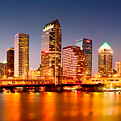

 This photo was taken from Tampa General Hospital. To get this type of shot you need to use a tripod because of the very long exposure(15 to 30 seconds). You want it to be quite late and want the sun to have already set. That way, you'll get lights on inside the buildings. You should get there half an hour before sunset and start taking pictures. As the sun sets, your pictures will take different color characteristics.